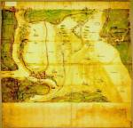

[Kaart in vogelvlucht van de verdronken Zuidhollandse Waard vanuit het westen gezien.] [Schaal variërend van circa 1:35.000 tot circa 1:50.000.] Handschrift op papier, gekleurd, 580 x 600 mm. Holland(?), eerste kwart van de zestiende eeuw. -- (COLLBN Port. 53 N 6)
Ongeveer een eeuw nadat bij de Sint-Elisabethsvloed van 1421 de dijken van de Grote of Zuid-Hollandse Waard waren doorgebroken, werd dit water- en landtafereel geschilderd en getekend. Op grond van een onderzoek van het watermerk in het papier van de kaart was het mogelijk de datering vroeg in de zestiende eeuw te plaatsen, wat goed overeenkomt met het picturale en beeldende karakter van de cartografie, waarin abstractie en de meetkundige basis ontbreken. Er is nog aandacht voor het karakteriserende detail, zo zijn dorpen en steden door middel van verbeeldende profieltjes en vignetten in hun eigen wezen geschetst. Eigenl erk zijn waarschijnlijk ingetekend omdat deze gegevens een belangrijke rol speelden bij een aantal processen over de rechten van visserij en eigendom voor het Hof van Holland en zelfs hogerop, voor de Grote Raad van Mechelen, het hoogste rechtscollege in de Nederlanden. We mogen aannemen dat deze kaart bij een dergelijk proces als bewijsstuk dienst heeft gedaan.
Literatuur
- Water als vijand, water als vriend. Onbekende schatten uit de waterschappen. Delft 1978, p. 12-21 en 54.
- M. Donkersloot-de Vrij, Topografische kaarten van Nederland vóór 1750. Handgetekende en gedrukte kaarten aanwezig in de Nederlandse rijksarchieven. Groningen 1981, p. 23-25.
- C. Koeman, Geschiedenis van de kartografie van Nederland. Zes eeuwen land- en zeekaarten en stadsplattegronden. Alphen aan den Rijn 1983, p. 87-92.
- Vergelijk: C.M. Briquet, Les filigranes. Dictionnaire historique des marques du papier dès leur apparition vers 1282 jusqu’en 1600. Amsterdam 1968. 4 dln, nr. 8534.
| vorige pagina | top pagina |